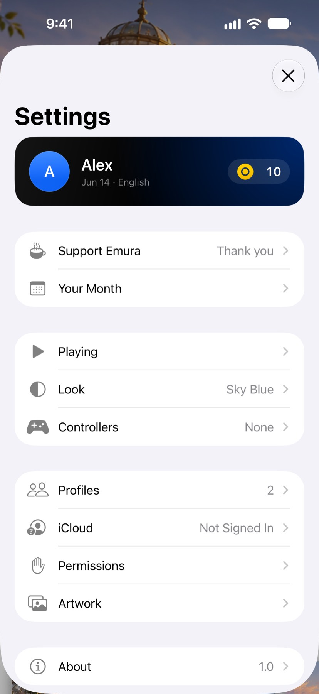
歩数がプレイコインに。
iPhone を持って歩けば、3DS ゲームでプレイコインがもらえます。
100 歩ごとにプレイコイン 1 枚、1 日 10 枚まで。
iPhone 向けに近日登場
すべての機種を無料で。広告なし。
Emura なら、お持ちの Game Boy、Game Boy Color、Game Boy Advance、DS、3DS のゲームを、それぞれに合わせた操作で遊べます。
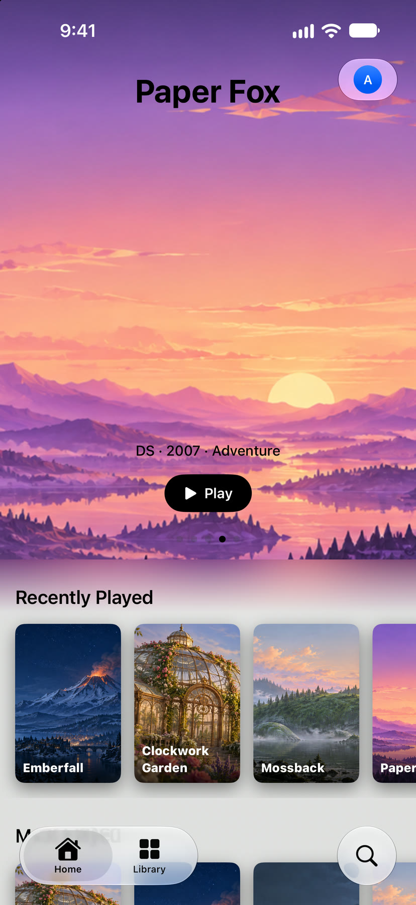
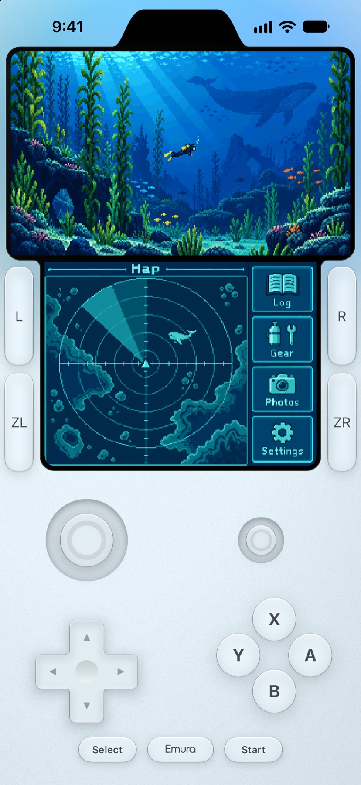
iPhone Air で、速度制限オフ
3DS ゲームは中央値で毎秒 135 フレーム。フルスピードの 2 倍以上です。テストした中で最も重いシーンでも 71 fps と、フルスピードを上回りました。
プレイはそれぞれのゲーム本来の速度で。この余裕が動きをなめらかに保ち、早送りを速くします。Emura のエミュレータはすべて Apple デバイスのためにゼロから書かれ、どれも JIT を必要としません。
iPhone Air で速度制限をオフにして測定：3DS ゲーム 11 本の 15 シーンと、DS、Game Boy Advance、Game Boy 各 1 本。1 シーンにつき 30 秒、続けて測定しました。測定中に iPhone が温まったため、これらは最良の値ではなく下限の値です。結果は、ゲーム、シーン、お使いの iPhone、その温度やバッテリー残量によって異なります。
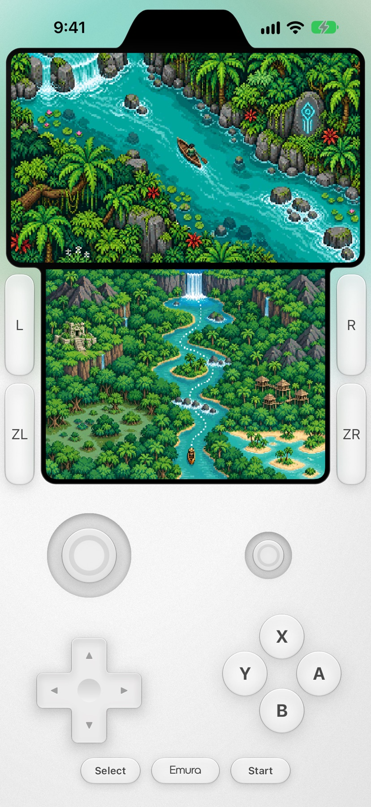
無料
ゲームの体験版制限も、ロックされた機種も、ステージの合間のバナー広告もありません。BIOS もシステムファイルも不要：必要なものは Emura に入っています。
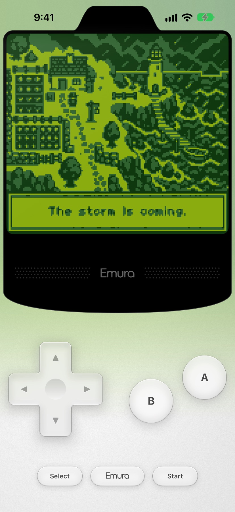
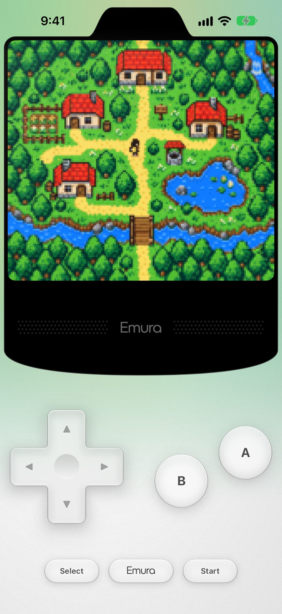
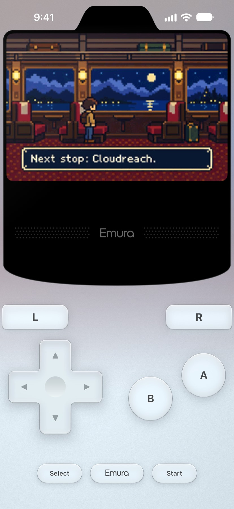
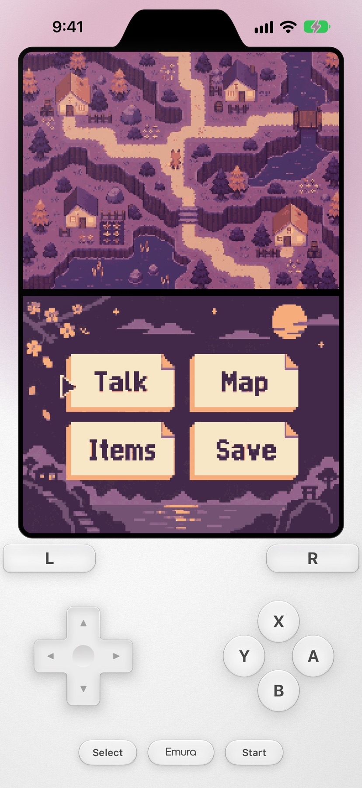
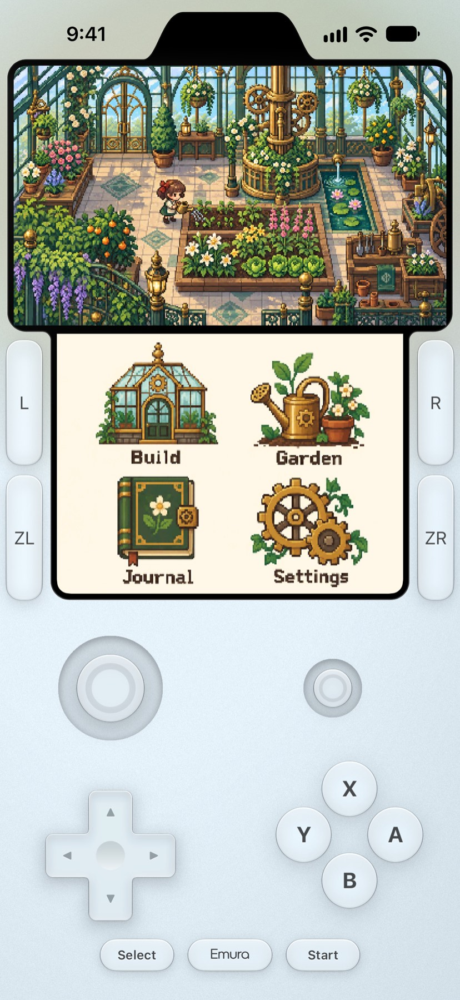
iPhone のために
Emura は iPhone の機能を使って、本物のゲーム機でできたことをよみがえらせます。

iPhone を持って歩けば、3DS ゲームでプレイコインがもらえます。
100 歩ごとにプレイコイン 1 枚、1 日 10 枚まで。
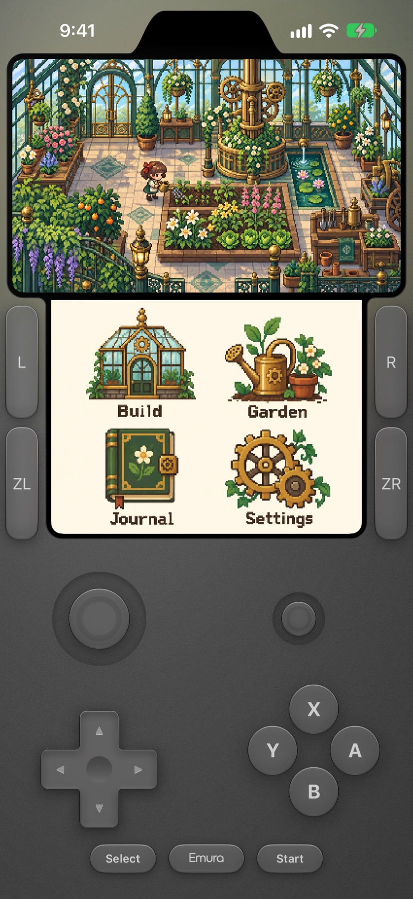
お使いの iPhone の仕上げを選ぶと、画面のゲーム機が手の中の iPhone と同じ色になります。サポーター
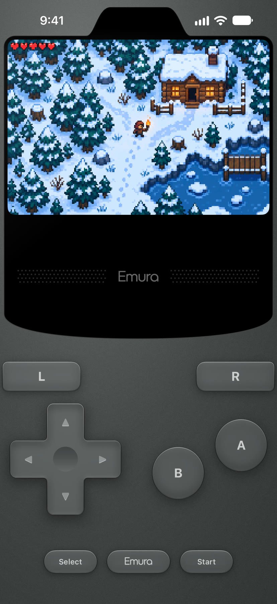
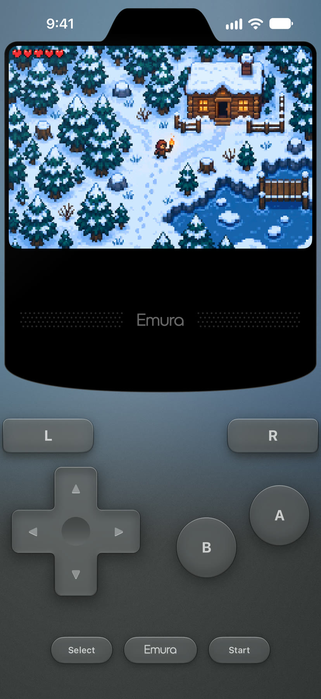
暗い部屋で光る画面のように、ゲームの光が操作ボタンのまわりに広がります。サポーター
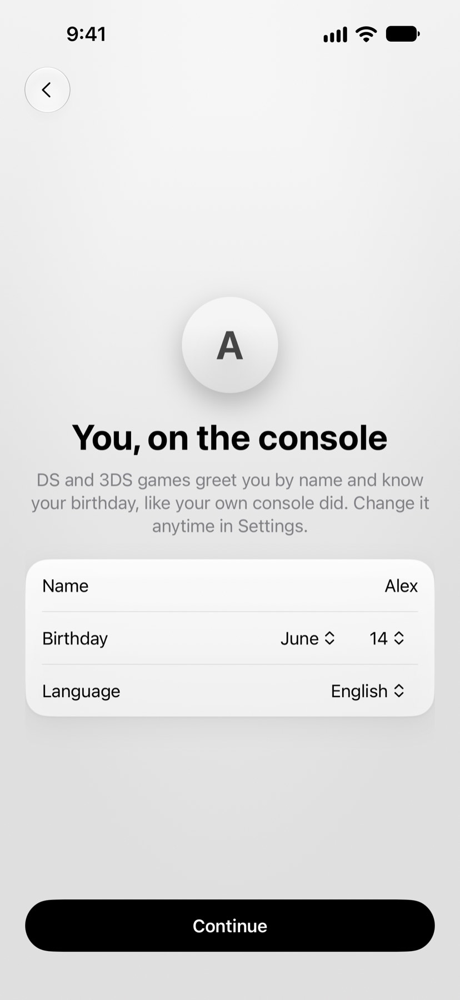
名前、誕生日、言語は、本物のゲーム機と同じように一度設定するだけ。DS と 3DS のゲームが名前で呼びかけてくれます。
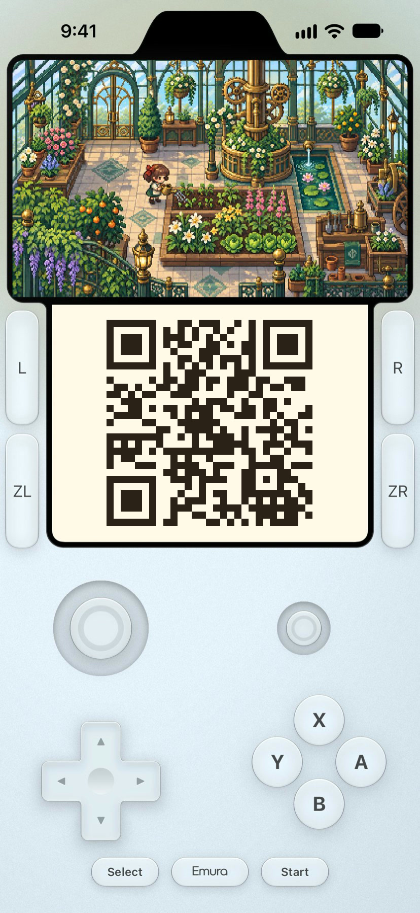
QR コードを読み取る 3DS ゲームでは、iPhone のカメラを使います。このコードは私たちからのもの。読み取って、どこにつながるか確かめてみてください。
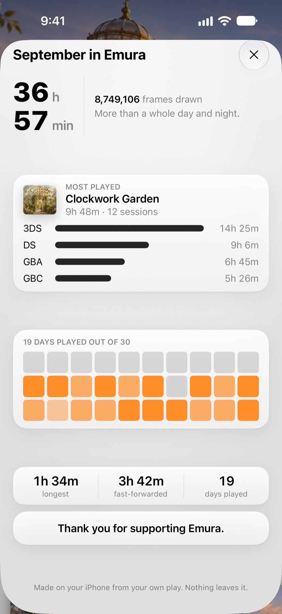
毎月、遊んだゲームを振り返れます。まとめは iPhone の中で作られ、外に送られることはありません。
30 日中 19 日プレイ。
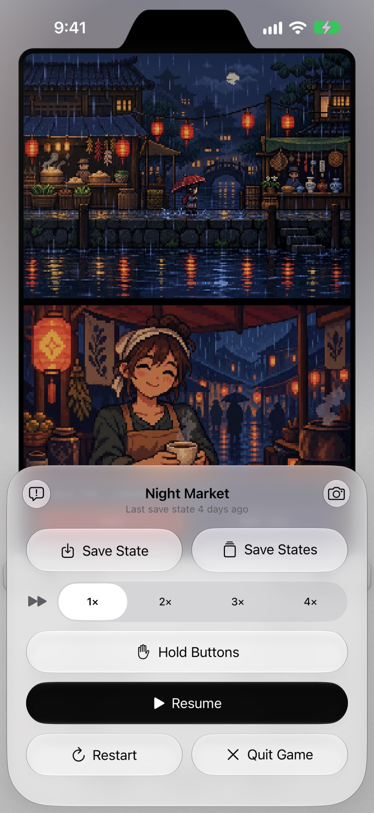
Emura はそれぞれのゲームがお使いの iPhone でどれだけ速く動くかを測定し、実際に出せる速度だけを最大 4× まで表示します。音の高さは変わらず、iPhone が熱くなると、冷えるまで早送りが自動でオフになります。
2× は無料。サポーターは、お使いの iPhone で出せる場合、最大 4× まで。
さらに、お持ちの 3DS の更新データや追加コンテンツのインストール、iPhone のキーボードでのゲーム内の文字入力、つなげばすぐ使えるコントローラにも対応しています。
5 つの携帯ゲーム機を、ひとつのアプリで
「ファイル」から読み込んで、すぐにプレイ。ゲームごとにパッケージアート付きの専用ページがあり、セーブデータもそこにまとまります。
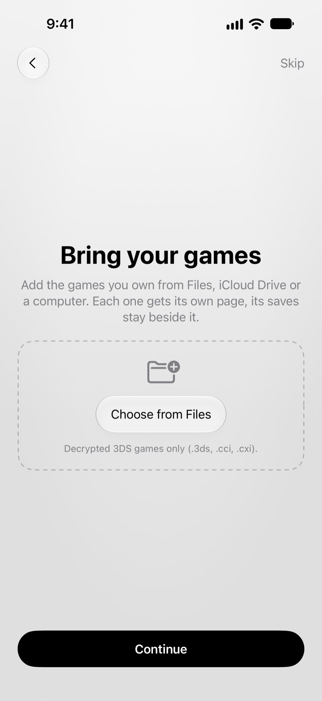
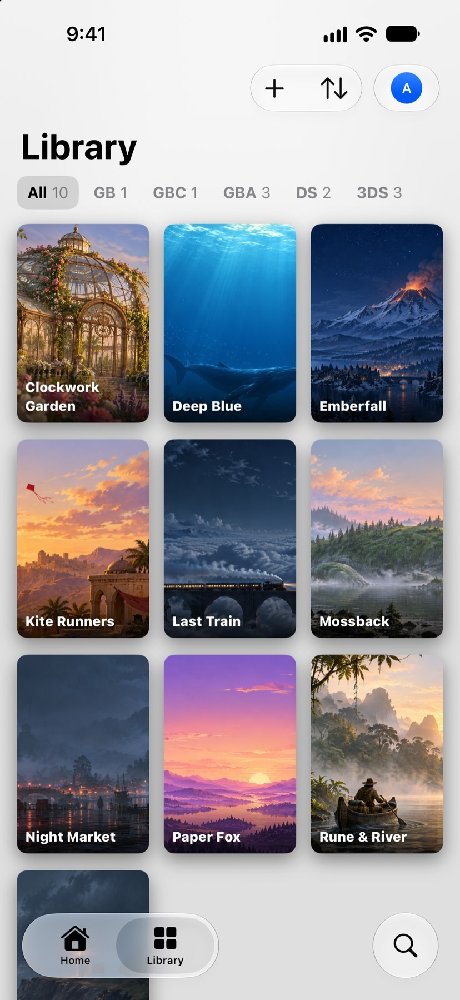
好きなスタイルで
DS と 3DS のゲームは、2 つの画面を横に並べても、iPhone を縦に持っても遊べます。ゲームコントローラやキーボードはつなげばすぐに使え、スキンも無料で読み込めます。
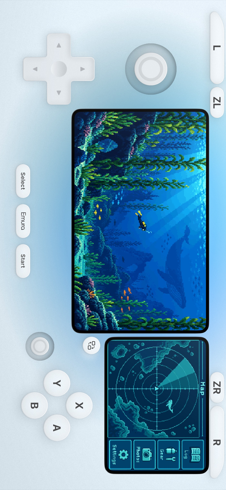
サポーター
サポーターは月額または年額で、お住まいの国の App Store に表示される価格でご利用いただけます。7 日間無料でお試しいただけます。
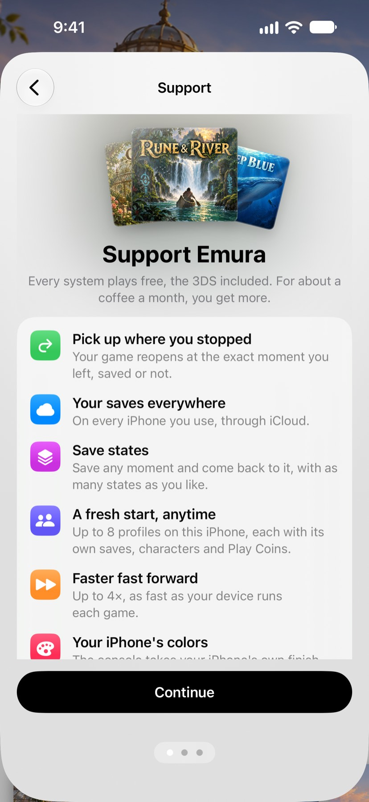
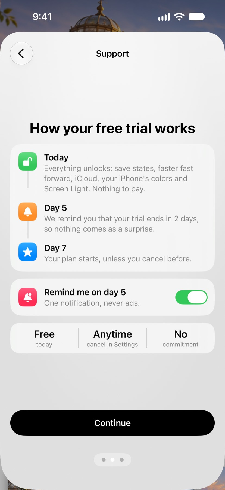
ひとりの開発者が制作
Emura のエミュレータはすべて、フランスの独立系開発者がひとりで作りました。最新情報を追いかけたり、質問したり、次に追加する機能に投票したりできます。
いいえ。お持ちのゲームを追加してください。このページのゲームはすべて架空のものです。
いいえ。すべての機種を無料で、広告なしで遊べます。サポーターは任意で、再開、ステートセーブ、iCloud 同期、最大 4× の早送り、プロフィール、本体カラー、画面の光が加わります。
Emura は iPhone 向けに App Store で近日配信予定です。リリース情報は r/EmuraApp でお知らせします。